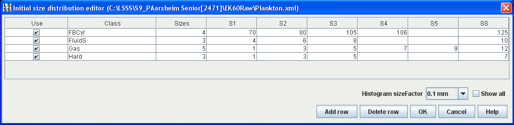

The plankton inversion configuration file.
Used by the Plankton inversion module.
The editor lets the user specify an initial size distribution for the various models used in the plankton inversion.

Each row defines an initial size distribution histogram for a given class [FBCyl, FluidS, Gas, Hard]. The species column is used for entering a catch. By clicking "Show all", it is possible to specify a start/stop date/time/depth for each distribution, defining a window of validity in terms of time and depth.
The number of bins in the histogram is given in the "size" column. Entering a higher/lower number here will dynamically alter the number of columns in the table to match the number of bins in the histogram. The SX gives the lower edge of each histogram bin, while SS gives the upper edge of the last bin. NX gives the contents of each bin. If a divider is entered that is inconsistent with the previous/next divider, the user is asked if the surrounding inconsistent dividers should be automatically adjusted. The dividers will be adjusted with one unit with respect to the entered divider.
The initial size factor in the combo box gives the scaling factor for the histogram bin edges.
Additional initial size distributions can be specified by pressing "Add row". Distributions are deleted by selecting a row and pressing "Delete row".
Pressing OK saves the setting to the XML file indicated in the window header.